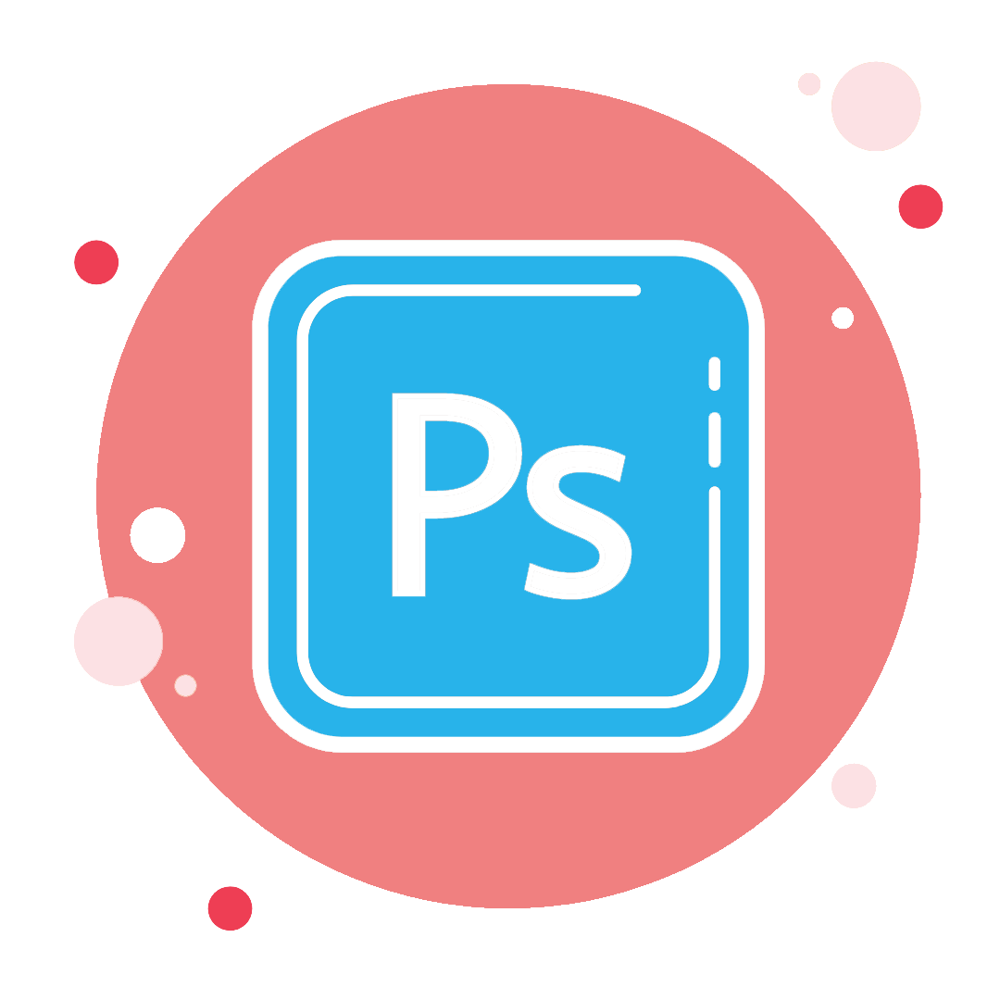
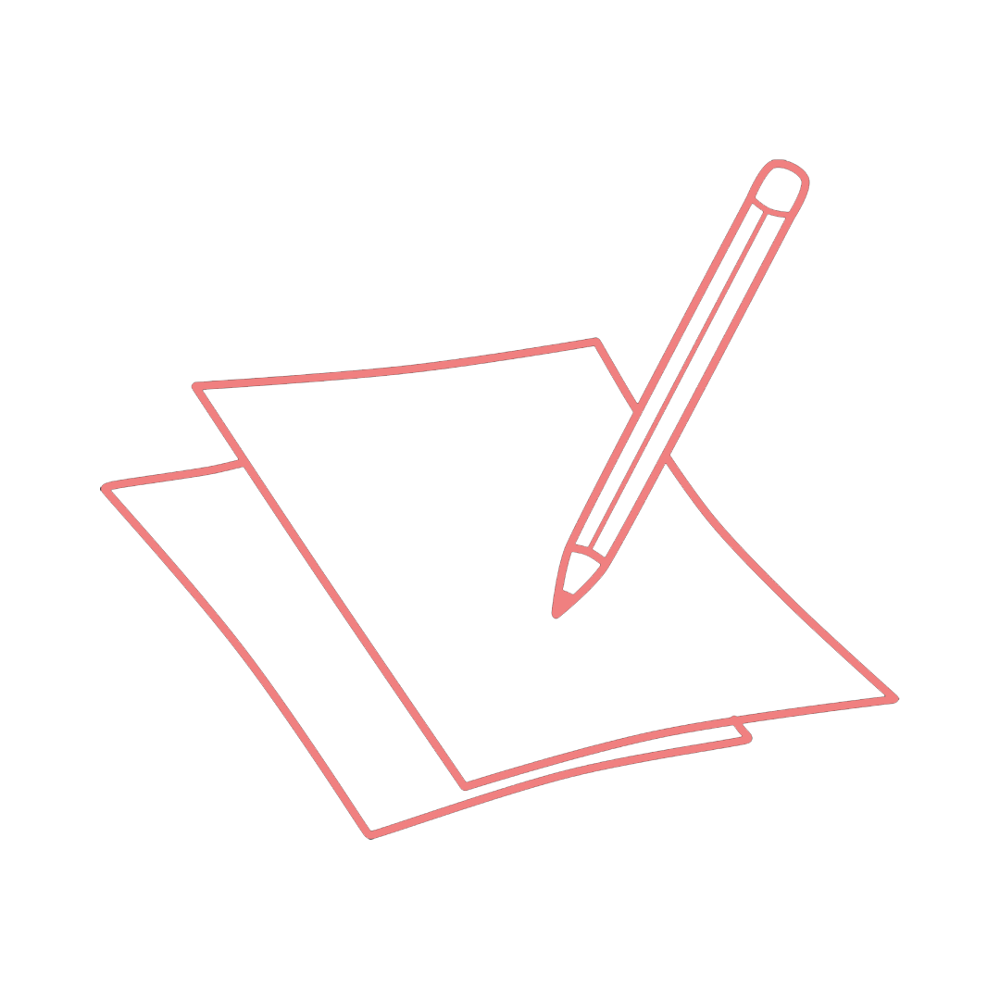
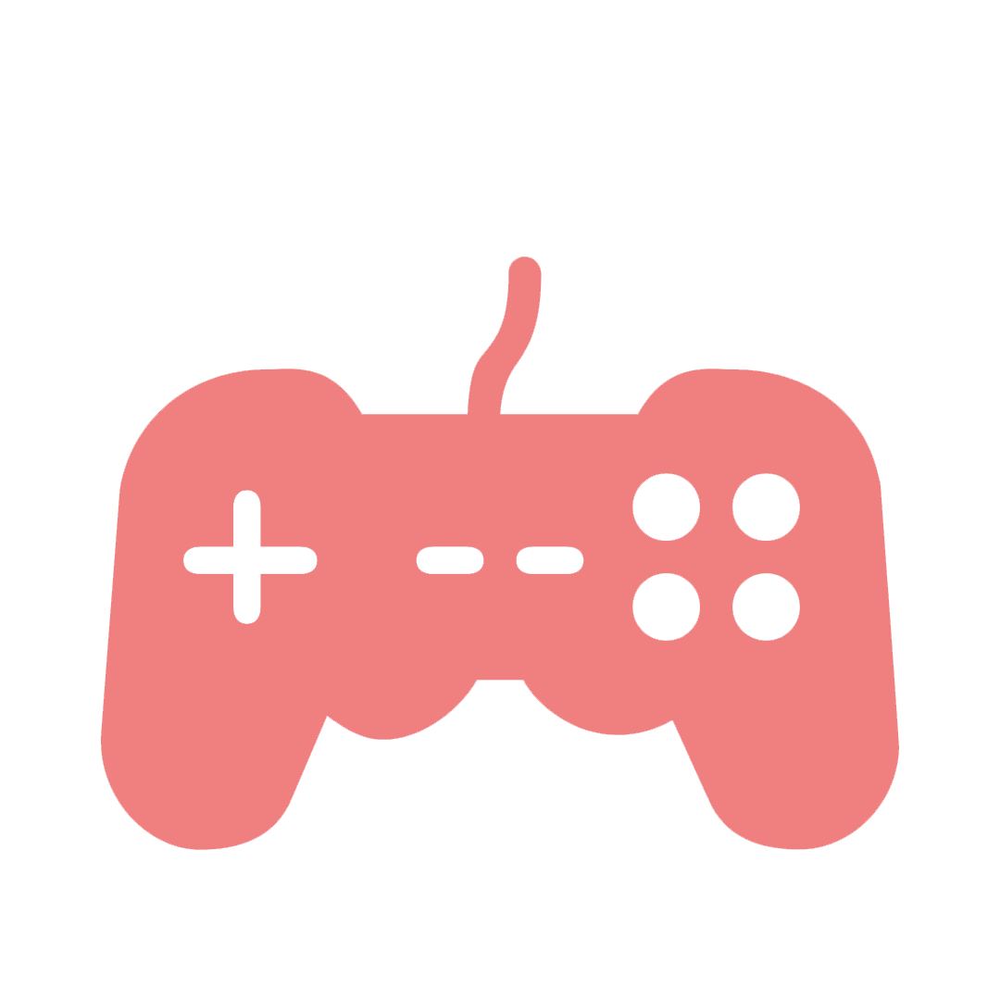

What i like

Desain Grafis
Saya suka bidang desain khusus nya desain grafis seperti membuat pamflet, brosur, banner, dan lain-lain.
Beberapa waktu belakangan ini saya sedang menekuni dalam membuat vector, cartoon style, dan sebagainya.

Writing
Saya suka menulis berbagai hal. Mulai dari jurnal harian, menulis cerita-cerita pendek, puisi, sampai
cerita berlembar-lembar dari berbagai genre. Saya senang mengekspresikan apa saja yang saya lihat, saya dengar dan
saya rasakan kedalam sebuah tulisan dibandingkan menggungkapkan dengan lisan.
Reading Book
Selain menulis, saya juga suka membaca buku. Buku novel, komik, atau apapun itu.

Video Gaming
Selain kegiatan diatas, saya juga suka bermain video game disela-sela waktu senggang saya